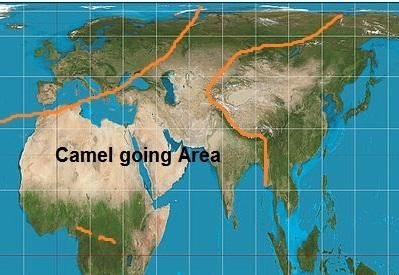
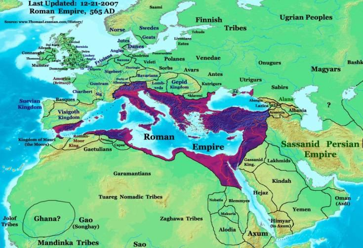

Today, there should be no doubt, as the entire population of this region has embraced Islam. It is now the mainland of the Muslim world. All pagans of the area were to accept Islam, while Christians and Jews were subdued and required to pay Jizya. This was achieved by the Prophet (pbuh) and his immediate followers (up to the third generation) in accordance with the guidance of the Furqan. But the Prophet (pbuh) had no world map. How could he define the boundaries of this Home? So, he gave a simple directive: 'Do not go where the camels do not go' (or words to that effect). This meant not to carry out military expeditions beyond the areas accessible to camels. At first glance, this might seem like a typical Bedouin approach—limiting travel to where camels could tread. However, today we can see the wisdom in this order. If you look at the map, Islam primarily spread within the regions where camels could travel. Camels cannot reach China, as they are blocked by the Altai, Tien Shan, Pamir, and Himalayan mountain ranges. They also cannot access Europe due to natural barriers like the Gibraltar Strait, Bosporus, Black Sea, Volga and Don River systems, the Ural Mountains, and the Polar Icecap. Camels are similarly unable to cross into India because of the Hindu Kush mountain range, and they cannot travel to the southern part of Africa due to the dense equatorial forests.
আজ, এই অঞ্চলের সমগ্র জনসংখ্যা ইসলাম গ্রহণ করায় সন্দেহের অবকাশ নেই। এটি এখন মুসলিম বিশ্বের মূল ভূখণ্ড। এলাকার সমস্ত পৌত্তলিকদের ইসলাম গ্রহণ করতে হয়েছিল, যখন খ্রিস্টান এবং ইহুদিদের পরাজিত করা হয়েছিল এবং তাদের জিজিয়া দিতে হয়েছিল। ফুরকানের নির্দেশনা অনুসারে নবী (সাঃ) এবং তাঁর অনুসারীরা (তৃতীয় প্রজন্ম পর্যন্ত) এটি অর্জন করেছিলেন। কিন্তু রাসুল (সাঃ) এর কোন পৃথিবীর মানচিত্র ছিল না। কিভাবে তিনি এই বাড়ির সীমানা সংজ্ঞায়িত করতে পারেন? তাই, তিনি একটি সহজ নির্দেশ দিয়েছেন: 'যেখানে উট যায় না সেখানে যাবেন না' (বা সেই প্রভাবের কথা)। এর অর্থ ছিল উটের অ্যাক্সেসযোগ্য অঞ্চলের বাইরে সামরিক অভিযান পরিচালনা না করা। প্রথম নজরে, এটি একটি সাধারণ বেদুইন পদ্ধতির মতো মনে হতে পারে - যেখানে উট পাড়ি দিতে পারে সেখানে ভ্রমণ সীমিত করে। যাইহোক, আজ আমরা এই ক্রমে প্রজ্ঞা দেখতে পাচ্ছি। আপনি যদি মানচিত্রের দিকে তাকান, ইসলাম প্রাথমিকভাবে সেই অঞ্চলগুলিতে ছড়িয়ে পড়ে যেখানে উট ভ্রমণ করতে পারে। উট চীনে পৌঁছাতে পারে না, কারণ তারা আলতাই, তিয়েন শান, পামির এবং হিমালয় পর্বতমালা দ্বারা অবরুদ্ধ। জিব্রাল্টার প্রণালী, বসপোরাস, কৃষ্ণ সাগর, ভলগা এবং ডন নদী ব্যবস্থা, ইউরাল পর্বতমালা এবং পোলার আইসক্যাপের মতো প্রাকৃতিক বাধার কারণে তারা ইউরোপে প্রবেশ করতে পারে না। হিন্দুকুশ পর্বতমালার কারণে উট একইভাবে ভারতে প্রবেশ করতে পারে না এবং ঘন নিরক্ষীয় বনের কারণে আফ্রিকার দক্ষিণাঞ্চলে ভ্রমণ করতে পারে না।
FIGURE 9.1: The Spread of Islam

চিত্র 9_1 / Figure 9_1
চিত্র 9.1: ইসলামের প্রসার
চিত্র 9_1 / Figure 9_1
However, the entire camel-going area is not the Home of Ummah. It specifically refers to the lands of the Arabs and Persians, extending from Morocco to the Pamirs. While camels can travel into Turkic regions, the Prophet (pbuh) forbade attacking them unless they attacked first. Islam was primarily spread among the Turkic people through the efforts of Sufis and Daees. The Prophet (pbuh) viewed Constantinople as the furthest extent of Islamic territory toward Europe and inspired its capture because it was the seat of the Roman Byzantine Emperor, who ruled over the Middle East. Otherwise, Constantinople was in Christian territory, where camels could not reach. The Prophet (pbuh) said, 'A king bearing the name of a prophet will capture Constantinople' (or words to that effect). Ottoman Emperor Sultan Muhammad II fulfilled this prophecy when he captured the city in 1453 AD. This is why Caliph Omar did not allow the building of a navy. When the Governor of Damascus, Muawiyah, wrote a letter requesting permission to build one, Caliph Omar became furious and declared, 'By the name of Allah, Muhammad was a true Prophet (pbuh), and I will never allow the building of a navy.' It was clear that constructing a navy would mean taking military expeditions beyond the camel-going area. After the death of Hadrat Omar, Muawiyah established what is considered the first Islamic navy and spoiled energy by engaging in conflicts with the Europeans. However, in today's context, building a defensive navy is desirable, although creating a blue- water navy may not be necessary. Muslims (Sahabah, Tabi‗un, and Tabi‗-Tabi‗in) captured the entire Home of Ummah (Darussalam), encompassing the lands where Arabs and Persians lived, from Morocco to the Pamirs. Thus, the mission of the Furqan was complete. Further expansion to preach Islam beyond the Home of Ummah is forbidden in light of the following verses:
যাইহোক, পুরো উটগামী এলাকাটি উম্মাহর বাড়ি নয়। এটি বিশেষভাবে আরব এবং পারস্যদের ভূমিকে বোঝায়, মরক্কো থেকে পামির পর্যন্ত বিস্তৃত। যদিও উট তুর্কি অঞ্চলে ভ্রমণ করতে পারে, নবী (সাঃ) তাদের আক্রমণ করতে নিষেধ করেছেন যদি না তারা প্রথমে আক্রমণ করে। ইসলাম প্রাথমিকভাবে সুফি ও দাঈদের প্রচেষ্টার মাধ্যমে তুর্কি জনগণের মধ্যে ছড়িয়ে পড়ে। নবী (সাঃ) কনস্টান্টিনোপলকে ইউরোপের দিকে ইসলামি ভূখণ্ডের সবচেয়ে দূরবর্তী সীমানা হিসাবে দেখেছিলেন এবং এটি দখল করতে অনুপ্রাণিত করেছিলেন কারণ এটি ছিল রোমান বাইজেন্টাইন সম্রাটের আসন, যিনি মধ্যপ্রাচ্য শাসন করেছিলেন। অন্যথায়, কনস্টান্টিনোপল খ্রিস্টান অঞ্চলে ছিল, যেখানে উট পৌঁছাতে পারত না। নবী (সাঃ) বলেছেন, 'একজন নবীর নামধারী একজন রাজা কনস্টান্টিনোপল দখল করবে' (বা সেই প্রভাবের কথা)। অটোমান সম্রাট সুলতান মুহাম্মদ দ্বিতীয় এই ভবিষ্যদ্বাণীটি পূরণ করেছিলেন যখন তিনি 1453 খ্রিস্টাব্দে শহরটি দখল করেছিলেন। এ কারণেই খলিফা ওমর নৌবাহিনী নির্মাণের অনুমতি দেননি। যখন দামেস্কের গভর্নর, মুয়াবিয়া, একটি নির্মাণের অনুমতির জন্য একটি চিঠি লিখেছিলেন, খলিফা ওমর ক্ষিপ্ত হয়েছিলেন এবং ঘোষণা করেছিলেন, 'আল্লাহর নামে, মুহাম্মদ একজন সত্যিকারের নবী ছিলেন এবং আমি কখনই নৌবাহিনী নির্মাণের অনুমতি দেব না।' এটা পরিষ্কার ছিল যে নৌবাহিনী নির্মাণের অর্থ হবে উটগামী এলাকা ছাড়িয়ে সামরিক অভিযান চালানো। হযরত ওমরের মৃত্যুর পর, মুয়াবিয়া প্রথম ইসলামী নৌবাহিনী হিসেবে বিবেচিত এবং ইউরোপীয়দের সাথে সংঘর্ষে লিপ্ত হয়ে শক্তি নষ্ট করে। যাইহোক, আজকের প্রেক্ষাপটে, একটি প্রতিরক্ষামূলক নৌবাহিনী তৈরি করা বাঞ্ছনীয়, যদিও নীল-জলের নৌবাহিনী তৈরির প্রয়োজন নাও হতে পারে। মুসলিমরা (সাহাবাহ, তাবিউন, এবং তাবি-তাবিইন) উম্মাহর পুরো বাড়ি (দারুসসালাম) দখল করে, মরক্কো থেকে পামির পর্যন্ত যেখানে আরব এবং পারস্যরা বসবাস করত সেগুলিকে ঘিরে। এভাবে ফুরকানের মিশন সম্পূর্ণ হলো। উম্মাহর ঘরের বাইরে ইসলাম প্রচারের আরও সম্প্রসারণ নিম্নলিখিত আয়াতের আলোকে নিষিদ্ধ:
―If it had been thy Lord's will, they would all have believed—all who are on earth! Will thou then compel mankind, against their will, to believe! No soul can believe, except by the will of God, and He will place doubt on those who will not understand. [Al Quran 10:99-100] However, later Muslims expanded into lands beyond the Home of Ummah (from Morocco to the Pamirs), but this did not significantly benefit the mission of preaching Islam. Spain, for example, was under Muslim rule for about eight hundred years, yet only a few converted to Islam. Similarly, Turks ruled parts of Europe for centuries, but the Muslims found in those areas are primarily of Turkish origin. The area of the Home of Ummah (from Morocco to the Pamirs) had to be captured. This region is characterized by vast steppes and deserts, where cattle herding were the primary means of livelihood. Herdsmen needed to move regularly to graze their livestock, as grass does not remain in one area throughout the year, and overgrazed land requires time to recover. These movements would not have been possible without tribal organization, as locals would otherwise have prevented them from entering their territories with their cattle. A man under the strong Tribal Leadership, could not accept Islam until the Tribal Chief had accepted it, and the Tribal Chief would not accept Islam until the King had accepted it. So, these areas were to be captured so that the Taghuts (Tribal Chiefs / Kings / Emperors) were neutralized and the people could accept Islam freely. The people in other parts of the world live in more loosely bound societies, and their lands are rich in resources, making them independent. When their lands are captured, they see the conquerors as invaders and reject them. In these regions, 'Dawah' by Muslim saints and preachers is the appropriate method for spreading Islam. For instance, the people of Indonesia and Malaysia embraced Islam without being conquered [This topic is discussed further in the Introduction of Part-2]. It is important to note that the 'camel-going area,' which extends from Morocco to the Pamirs, is referred to as the Home of Ummah only in relation to the 'Strategy of Preaching.' As a religion, Islam is meant for all of mankind, as clearly stated in Chapter-10. Like Muslims, Christians also have a Home. One can read in the Holy Bible how Paul the Apostle was driven into Europe.
- যদি তোমার প্রভুর ইচ্ছা হত, তবে তারা সবাই বিশ্বাস করত - যারা পৃথিবীতে আছে! তখন তুমি কি মানবজাতিকে তাদের ইচ্ছার বিরুদ্ধে ঈমান আনতে বাধ্য করবে? ঈশ্বরের ইচ্ছা ব্যতীত কোন আত্মা বিশ্বাস করতে পারে না, এবং যারা বোঝে না তাদের উপর তিনি সন্দেহ স্থাপন করবেন। [আল কোরান 10:99-100] যাইহোক, পরবর্তীতে মুসলিমরা উম্মাহর বাড়ি (মরক্কো থেকে পামির পর্যন্ত) ভূমিতে বিস্তৃত হয়েছিল, কিন্তু এটি ইসলাম প্রচারের লক্ষ্যে উল্লেখযোগ্যভাবে লাভবান হয়নি। উদাহরণস্বরূপ, স্পেন প্রায় আটশ বছর ধরে মুসলিম শাসনের অধীনে ছিল, তবুও মাত্র কয়েকজন ইসলাম গ্রহণ করেছিল। একইভাবে, তুর্কিরা কয়েক শতাব্দী ধরে ইউরোপের কিছু অংশ শাসন করেছে, কিন্তু সেই অঞ্চলে পাওয়া মুসলমানরা মূলত তুর্কি বংশোদ্ভূত। হোম অফ উম্মাহর এলাকা (মরক্কো থেকে পামির পর্যন্ত) দখল করতে হয়েছিল। এই অঞ্চলটি বিস্তীর্ণ মরুভূমি এবং মরুভূমি দ্বারা চিহ্নিত করা হয়, যেখানে গবাদি পশু পালন ছিল জীবিকা নির্বাহের প্রাথমিক উপায়। পশুপালকদের তাদের গবাদি পশু চরানোর জন্য নিয়মিত চলাচল করতে হয়, কারণ সারা বছর ঘাস একটি এলাকায় থাকে না এবং অতিরিক্ত চরানো জমি পুনরুদ্ধার করতে সময় লাগে। এই আন্দোলনগুলি উপজাতীয় সংগঠন ছাড়া সম্ভব হত না, কারণ স্থানীয়রা অন্যথায় তাদের গবাদি পশু নিয়ে তাদের অঞ্চলে প্রবেশ করতে বাধা দিত। শক্তিশালী উপজাতীয় নেতৃত্বের অধীনে একজন ব্যক্তি, উপজাতি প্রধান এটি গ্রহণ না করা পর্যন্ত ইসলাম গ্রহণ করতে পারে না, এবং উপজাতীয় প্রধান ইসলাম গ্রহণ করবেন না যতক্ষণ না রাজা এটি গ্রহণ করেন। সুতরাং, এই অঞ্চলগুলিকে দখল করতে হবে যাতে তাগুতদের (উপজাতি প্রধান / রাজা / সম্রাট) নিরপেক্ষ করা হয় এবং জনগণ স্বাধীনভাবে ইসলাম গ্রহণ করতে পারে। বিশ্বের অন্যান্য অংশের লোকেরা আরও ঢিলেঢালাভাবে আবদ্ধ সমাজে বাস করে এবং তাদের ভূমি সম্পদে সমৃদ্ধ, তাদের স্বাধীন করে। যখন তাদের জমি দখল করা হয়, তারা বিজয়ীদেরকে আক্রমণকারী হিসাবে দেখে এবং তাদের প্রত্যাখ্যান করে। এই অঞ্চলগুলিতে, মুসলিম সাধক ও প্রচারকদের দ্বারা 'দাওয়াহ' ইসলাম প্রচারের জন্য উপযুক্ত পদ্ধতি। উদাহরণস্বরূপ, ইন্দোনেশিয়া এবং মালয়েশিয়ার লোকেরা বিজয়ী না হয়েই ইসলাম গ্রহণ করেছিল [এই বিষয়টি আরও আলোচনা করা হয়েছে পার্ট-২ এর ভূমিকায়]। এটি লক্ষ করা গুরুত্বপূর্ণ যে 'উট-যাওয়ার এলাকা', যা মরক্কো থেকে পামির পর্যন্ত বিস্তৃত, শুধুমাত্র 'প্রচারের কৌশল' সম্পর্কিত উম্মাহর বাড়ি হিসাবে উল্লেখ করা হয়। একটি ধর্ম হিসাবে, ইসলাম সমগ্র মানবজাতির জন্য বোঝানো হয়েছে, অধ্যায়-10 এ স্পষ্টভাবে বলা হয়েছে। মুসলমানদের মতো খ্রিস্টানদেরও একটি বাড়ি আছে। একজন পবিত্র বাইবেলে পড়তে পারেন কিভাবে প্রেরিত পলকে ইউরোপে চালিত করা হয়েছিল।
―They travelled through the region of Phrygia and Galatia because the Holy Spirit did not let them preach the message in the province of Asia. When they reached the border of Mysia, they tried to go into the province of Bithynia, but the spirit of Jesus did not allow them…That night Paul had a vision in which he saw a Macedonian standing and begging him: Come over Macedonia and help us…‖ – Acts 16 (6-10), Holy Bible
- তারা ফ্রুগিয়া এবং গালাতিয়া অঞ্চলের মধ্য দিয়ে ভ্রমণ করেছিল কারণ পবিত্র আত্মা তাদের এশিয়া প্রদেশে বার্তা প্রচার করতে দেননি। যখন তারা মাইসিয়ার সীমান্তে পৌঁছেছিল, তারা বিথিনিয়া প্রদেশে যাওয়ার চেষ্টা করেছিল, কিন্তু যীশুর আত্মা তাদের অনুমতি দেয়নি…সেই রাতে পল একটি দর্শন পেয়েছিলেন যেখানে তিনি একজন ম্যাসেডোনীয়কে দাঁড়িয়ে তাকে ভিক্ষা করতে দেখেছিলেন: মেসিডোনিয়ার উপরে আসুন এবং আমাদের সাহায্য করুন...” – অ্যাক্টস 16 (6-10), পবিত্র বাইবেল
So, Europe is the primary home of Christianity. Moses too was allotted with a Home, but Jews were not ready to fight for the Land.
সুতরাং, ইউরোপ হল খ্রিস্টধর্মের প্রাথমিক আবাস। মূসাকেও একটি বাড়ি দেওয়া হয়েছিল, কিন্তু ইহুদিরা জমির জন্য লড়াই করতে প্রস্তুত ছিল না।
Taking Jizya
জিজিয়া নেওয়া
In this section, the orders for fighting Pagans, subduing Christians, and taking Jizya are given in the same verse, indicating they are related. Pagans were to be fought, the Christians (the Byzantine Emperor and allied kings) protecting them were to be defeated, and Jizya was to be taken to ensure they felt completely subdued. Muslims pay Zakat; if Jews and Christians do not pay Jizya, they will not remain on equal footing—the prices in their shops will be lower. The Quran only permits taking Jizya from the People of the Book, meaning Jizya cannot be taken from Pagans living in the Home of Ummah. Instead, they should be encouraged to accept Islam. If they refuse, they are to be fought. If they surrender, they should be detained in a secure place and motivated until they embrace Islam. For Pagans, motivation and the sword go hand in hand. However, this is a policy matter; in reality, no Pagan remain at present in the Home of Ummah (from Morocco to the Pamirs)—Prophet (pbuh), his Companions, and the following generations (Tabiun and Tabi-Tabiin) completed their mission. One should not think that Jihad has ended. Jihad is essential to maintain Islam in the Home of Ummah (from Morocco to the Pamirs). However, the intensity of Jihad is likely to remain low, primarily political, as demonstrated by the IRGC in Iran since 1979. Its purpose is to preserve the Home of Ummah (Darussalam) under Islamic laws. Jihad must be conducted under the directive of the highest Islamic leadership (Caliph or Highest Imam).
এই অংশে, পৌত্তলিকদের সাথে যুদ্ধ করা, খ্রিস্টানদের দমন করা এবং জিজিয়া নেওয়ার আদেশ একই আয়াতে দেওয়া হয়েছে, যা নির্দেশ করে যে তারা সম্পর্কিত। পৌত্তলিকদের সাথে যুদ্ধ করতে হবে, তাদের রক্ষাকারী খ্রিস্টানরা (বাইজান্টাইন সম্রাট এবং মিত্র রাজারা) পরাজিত হতে হবে এবং জিজিয়া নেওয়া হবে যাতে তারা সম্পূর্ণভাবে পরাধীন বোধ করে। মুসলমানরা যাকাত দেয়; ইহুদী ও খ্রিস্টানরা যদি জিজিয়া না দেয়, তাহলে তারা সমান অবস্থানে থাকবে না- তাদের দোকানে দাম কম হবে। কুরআন শুধুমাত্র আহলে কিতাবদের কাছ থেকে জিজিয়া নেওয়ার অনুমতি দেয়, যার অর্থ উম্মাহর বাড়িতে বসবাসকারী পৌত্তলিকদের কাছ থেকে জিজিয়া নেওয়া যায় না। বরং তাদের ইসলাম গ্রহণে উৎসাহিত করা উচিত। প্রত্যাখ্যান করলে তাদের সঙ্গে লড়াই করতে হবে। যদি তারা আত্মসমর্পণ করে, তাহলে তাদেরকে নিরাপদ স্থানে আটকে রাখা উচিত এবং ইসলাম গ্রহণ না করা পর্যন্ত উদ্বুদ্ধ করা উচিত। পৌত্তলিকদের জন্য, অনুপ্রেরণা এবং তলোয়ার একসাথে চলে। যাইহোক, এটি একটি নীতিগত বিষয়; বাস্তবে, উম্মাহর বাড়িতে (মরক্কো থেকে পামির পর্যন্ত) বর্তমানে কোনো পৌত্তলিক অবশিষ্ট নেই—নবী (সা.), তাঁর সাহাবীগণ এবং পরবর্তী প্রজন্ম (তাবিউন এবং তাবি-তাবিইন) তাদের মিশন সম্পন্ন করেছেন। কেউ যেন মনে না করে যে, জিহাদ শেষ হয়ে গেছে। উম্মাহর ঘরে (মরক্কো থেকে পামির পর্যন্ত) ইসলাম বজায় রাখার জন্য জিহাদ অপরিহার্য। যাইহোক, জিহাদের তীব্রতা কম থাকার সম্ভাবনা রয়েছে, প্রাথমিকভাবে রাজনৈতিক, যেমনটি 1979 সাল থেকে ইরানে IRGC দ্বারা প্রদর্শিত হয়েছে। এর উদ্দেশ্য হল ইসলামিক আইনের অধীনে উম্মাহর বাড়ি (দারুসসালাম) সংরক্ষণ করা। সর্বোচ্চ ইসলামী নেতৃত্বের (খলিফা বা সর্বোচ্চ ইমাম) নির্দেশে জিহাদ পরিচালনা করতে হবে।
The Jews call Uzair, a son of Allah; and the Christians call Christ, the son of Allah. That is a saying from their mouth; they but imitate what the unbelievers of old used to say. Allah's curse be on them. How they are deluded away from the Truth! They take their priests and their anchorites to be their lords in derogation of Allah and Christ the son of Mary, yet they were commanded to worship but One God—there is no god but He; praise and glory to Him from having the partners they associate. Fain would they extinguish the light of Allah with their mouths, but Allah will not allow but that His light should be perfected, even though the Unbelievers may detest (it). It is He Who has sent His Apostle with guidance and the Religion of Truth to proclaim it over all religion, even though the Pagans may detest (it). O you who believe, there are indeed many among the priests and anchorites who in Falsehood devour the substance of men and hinder from the Way of Allah. And there are those who bury gold and silver and spend it not in the Way of Allah. Announce unto them a most grievous penalty. On the Day when heat will be produced out of that in the fire of Hell, and with it will be branded their foreheads, their flanks, and their backs—this is that which you buried for yourselves; taste ye then that you buried! The number of months in the sight of Allah is twelve—so ordained by Him the day He created the Skies and Lands; of them four are sacred—that is the straight usage. So wrong not yourselves therein and fight the Pagans all together as they fight you all together. But know that Allah is with the Guards. Verily, the transposing is an addition to unbelief—the Unbelievers are led to wrong thereby for they make it lawful one year and forbidden another year in order to adjust the number of months forbidden by Allah and make such forbidden ones lawful. The evil of their course seems pleasing to them. But Allah guides not those who reject Faith.
ইহুদীরা উজাইরকে আল্লাহর পুত্র বলে; আর খ্রিস্টানরা খ্রীষ্টকে আল্লাহর পুত্র বলে। এটা তাদের মুখ থেকে একটি কথা; তারা কিন্তু অনুকরণ করে যা পূর্বের অবিশ্বাসীরা বলত। তাদের উপর আল্লাহর অভিশাপ। কিভাবে তারা সত্য থেকে দূরে বিভ্রান্ত হয়! তারা আল্লাহ ও মরিয়ম তনয় খ্রীষ্টকে অবমাননা করে তাদের ধর্মযাজক ও তাদের নোঙরদেরকে তাদের প্রভু হিসেবে গ্রহণ করে, তথাপি তাদের আদেশ করা হয়েছিল যে তারা এক ইলাহ ছাড়া ইবাদত করবে-তিনি ছাড়া কোন উপাস্য নেই। তারা যে অংশীদারদের অংশীদার করে তাদের থেকে তাঁর প্রশংসা এবং গৌরব। তারা তাদের মুখ দিয়ে আল্লাহর নূরকে নিভিয়ে দিতে চাইবে, কিন্তু কাফেররা অপছন্দ করলেও আল্লাহ তার নূরকে পরিপূর্ণ করার অনুমতি দেবেন না। তিনিই তাঁর রসূলকে হেদায়েত ও সত্যের দ্বীন সহ সকল ধর্মের উপর প্রচার করার জন্য পাঠিয়েছেন, যদিও পৌত্তলিকরা তা ঘৃণা করে। হে ঈমানদারগণ, প্রকৃতপক্ষে ধর্মযাজক ও নোঙরদের মধ্যে এমন অনেক আছে যারা মিথ্যার বশবর্তী হয়ে মানুষের মাল খেয়ে ফেলে এবং আল্লাহর পথে বাধা সৃষ্টি করে। আর কিছু লোক আছে যারা স্বর্ণ ও রৌপ্য দাফন করে এবং আল্লাহর পথে ব্যয় করে না। তাদের জন্য অত্যন্ত কঠিন শাস্তির ঘোষণা দাও। যেদিন জাহান্নামের আগুনে তা থেকে তাপ উৎপন্ন করা হবে এবং তা দিয়ে তাদের কপাল, পাশ ও পিঠে দাগ দেওয়া হবে- এটা সেই জিনিস যা তোমরা নিজেদের জন্য কবর দিয়েছিলে। তাহলে আস্বাদন কর যে তোমরা কবর দিয়েছ! আল্লাহর দৃষ্টিতে মাসের সংখ্যা হল বারোটি- যেদিন তিনি আসমান ও জমিন সৃষ্টি করেছেন, সেই দিনটি তাঁর দ্বারা নির্ধারিত; তাদের মধ্যে চারটি পবিত্র-এটাই সোজা ব্যবহার। সুতরাং তোমরা সেখানে নিজেদের ভুল করো না এবং পৌত্তলিকদের সাথে একত্রে যুদ্ধ করো যেমন তারা সবাই মিলে তোমাদের সাথে যুদ্ধ করে। তবে জেনে রাখুন, আল্লাহ পাহারাদারদের সাথে আছেন। প্রকৃতপক্ষে, হস্তান্তর অবিশ্বাসের একটি সংযোজন- এতে অবিশ্বাসীরা ভুলের দিকে পরিচালিত হয় কারণ তারা এক বছর হালাল করে এবং অন্য বছর হারাম করে যাতে আল্লাহর হারাম মাসের সংখ্যা সামঞ্জস্য করা যায় এবং এই ধরনের হারামকে হালাল করা যায়। তাদের পথের মন্দ তাদের কাছে আনন্দদায়ক বলে মনে হয়। কিন্তু যারা বিশ্বাস প্রত্যাখ্যান করে আল্লাহ তাদের পথ দেখান না।
A believer in Allah should not fight against another believer in Allah. However, the People of the Book have strayed significantly, claiming Uzair and Jesus as the sons of God and taking their priests and monks as lords. Therefore, they may be fought if they oppose Islam.
আল্লাহর প্রতি বিশ্বাসী ব্যক্তির অন্য আল্লাহর প্রতি বিশ্বাসীর সাথে যুদ্ধ করা উচিত নয়। যাইহোক, আহলে কিতাবরা উল্লেখযোগ্যভাবে পথভ্রষ্ট হয়েছে, উজাইর ও ঈসাকে ঈশ্বরের পুত্র বলে দাবি করে এবং তাদের পুরোহিত ও সন্ন্যাসীদেরকে প্রভু হিসেবে গ্রহণ করেছে। তাই ইসলামের বিরোধিতা করলে তাদের সাথে যুদ্ধ করা হতে পারে।
FIGURE 9.2: Roman Empire in 565 CE

চিত্র 9_2 / Figure 9_2
চিত্র 9.2: 565 CE সালে রোমান সাম্রাজ্য
চিত্র 9_2 / Figure 9_2
From the time of Alexander (356–323 BCE), the Arabs remained subdued due to European aggressions. After the Greeks, the Romans took control, and nearly all the countries along the Mediterranean coast were under European rule for hundreds of years. As a result, it was likely that common Arabs harbored resentment toward them. During the Prophet‘s (pbuh) time, the Romans had a forward capital in Damascus. The Prophet (pbuh) would often say in public lectures, 'Support me, and the palaces of Damascus will be yours' (words to that effect). A small minority of Arabs converted to Christianity, but the majority remained idolaters. Deformed Christianity did not resonate with the people of the land, leaving the Romans with no justification to remain in Arabian territories.
আলেকজান্ডারের সময় থেকে (BCE 356-323), আরবরা ইউরোপীয় আগ্রাসনের কারণে পরাধীন ছিল। গ্রীকদের পরে, রোমানরা নিয়ন্ত্রণ নেয় এবং ভূমধ্যসাগরীয় উপকূলের প্রায় সমস্ত দেশ শত শত বছর ধরে ইউরোপীয় শাসনের অধীনে ছিল। ফলস্বরূপ, সম্ভবত সাধারণ আরবরা তাদের প্রতি বিরক্তি পোষণ করেছিল। রাসুল (সাঃ) এর সময়ে, রোমানদের দামেস্কে একটি অগ্রবর্তী রাজধানী ছিল। নবী (সাঃ) প্রায়ই জনসাধারণের বক্তৃতায় বলতেন, 'আমাকে সমর্থন করুন, এবং দামেস্কের প্রাসাদগুলি আপনার হবে' (সেই প্রভাবের কথা)। আরবদের একটি ছোট সংখ্যালঘু খ্রিস্টান ধর্মে ধর্মান্তরিত হয়েছিল, কিন্তু সংখ্যাগরিষ্ঠরা মূর্তিপূজক ছিল। বিকৃত খ্রিস্টান ধর্ম দেশের মানুষের সাথে অনুরণিত হয়নি, রোমানদের আরব অঞ্চলে থাকার কোন যুক্তি নেই।
Segment 4 Organizing and Participating in War Expedition
সেগমেন্ট 4 সংগঠিত এবং যুদ্ধ অভিযানে অংশগ্রহণ
O you who believe, what is the matter with you that when you are asked to go forth in the cause of Allah, you cling heavily to the earth? Do you prefer the life of this world to the Hereafter? But little is the comfort of this life as compared with the Hereafter. Unless you go forth, He will punish you with a grievous penalty, and put others in your place; but Him you would not harm in the least for Allah has power over all things. If you help not, certainly, Allah did indeed help him when the Unbelievers drove him out; he had no more than one companion; they two were in the cave, and he said to his companion, "Have no fear, for Allah is with us". Then Allah sent down His peace upon him and strengthened him with forces, which you saw not, and humbled to the depths the word of the Unbelievers. But the word of Allah is exalted to the heights; for Allah is Exalted in Might, Wise. Go you forth lightly or heavily and strive and struggle with your goods and your persons in the cause of Allah. That is best for you, if you knew. If there had been immediate gain and the journey easy, they would without doubt have followed you, but the distance was long on them. They would indeed swear by Allah: if we only could, we should certainly have come out with you. They destroy their own souls. And Allah does know that they are certainly lying. May Allah forgive you—why did you grant them leave until you saw those who told the truth in a clear light, and you had known the liars? Those who believe in Allah and the Last Day ask you for no exemption from fighting with their properties and their lives. And Allah knows the Guards. Only those ask you for exemption who believe not in Allah and the Last Day, and whose hearts are in doubt so that they are tossed in their doubts to and fro. If they had intended to come out, they would certainly have made some preparation therefore; but Allah was averse to their being sent forth, so He made them lag behind and they were told: Sit you among those who sit (women).
হে ঈমানদারগণ, তোমাদের কি হল যে, যখন তোমাদেরকে আল্লাহর পথে বের হতে বলা হয়, তখন তোমরা মাটিকে আঁকড়ে ধরো? তুমি কি আখেরাতের চেয়ে দুনিয়ার জীবনকে পছন্দ কর? কিন্তু পরকালের তুলনায় এই জীবনের আরাম সামান্যই। যদি তুমি বের না হও, তিনি তোমাকে কঠিন শাস্তি দেবেন এবং তোমার জায়গায় অন্যদের বসিয়ে দেবেন; কিন্তু তোমরা তাঁর কোন ক্ষতি করতে পারবে না, কারণ আল্লাহ সর্ব বিষয়ে ক্ষমতাবান। যদি তোমরা সাহায্য না কর, তবে অবশ্যই আল্লাহ তাকে সাহায্য করেছিলেন যখন কাফেররা তাকে তাড়িয়ে দিয়েছিল। তার একাধিক সঙ্গী ছিল না; তারা দুজন গুহায় ছিল, এবং তিনি তার সঙ্গীকে বললেন, "ভয় করো না, কারণ আল্লাহ আমাদের সাথে আছেন"। অতঃপর আল্লাহ তার উপর শান্তি নাযিল করলেন এবং তাকে এমন বাহিনী দিয়ে শক্তিশালী করলেন, যা আপনি দেখতে পাননি এবং কাফেরদের কথাকে গভীরভাবে অবনত করেছেন। কিন্তু আল্লাহর বাণী উচ্চতায় উন্নীত; কারণ আল্লাহ পরাক্রমশালী, প্রজ্ঞাময়। তোমরা হাল্কা বা প্রবলভাবে বের হও এবং আল্লাহর পথে তোমাদের মাল ও ব্যক্তিদের দিয়ে জিহাদ কর। এটাই তোমাদের জন্য উত্তম, যদি তোমরা জানতে। যদি তাৎক্ষণিক লাভ হতো এবং যাত্রা সহজ হতো, তাহলে তারা নিঃসন্দেহে আপনাকে অনুসরণ করত, কিন্তু দূরত্ব তাদের কাছে দীর্ঘ ছিল। তারা নিশ্চয়ই আল্লাহর নামে শপথ করে বলবে, আমরা যদি পারতাম তবে অবশ্যই তোমাদের সাথে বের হতাম। তারা নিজেদের আত্মাকে ধ্বংস করে। আর আল্লাহ জানেন যে, তারা অবশ্যই মিথ্যাবাদী। আল্লাহ আপনাকে ক্ষমা করুন - কেন আপনি তাদের ছুটি দিলেন যতক্ষণ না আপনি তাদের দেখেছেন যারা সত্য বলেছে এবং আপনি মিথ্যাবাদীদের চিনতে পেরেছেন? যারা আল্লাহ ও পরকালের প্রতি ঈমান রাখে তারা তোমার কাছে তাদের জান-মাল ও জান-মাল নিয়ে যুদ্ধ থেকে কোন ছাড় চায় না। আর আল্লাহ পাহারাদারদের জানেন। শুধু তারাই আপনার কাছে অব্যাহতি চায় যারা আল্লাহ ও শেষ দিনে বিশ্বাস করে না এবং যাদের অন্তর সন্দেহের মধ্যে রয়েছে যাতে তারা তাদের এদিক-ওদিক সন্দেহের মধ্যে ফেলে দেয়। যদি তারা বেরিয়ে আসার ইচ্ছা করত, তবে তারা অবশ্যই কিছু প্রস্তুতি নিত; কিন্তু আল্লাহ তাদের প্রেরিত হওয়াকে অপছন্দ করেন, তাই তিনি তাদেরকে পিছিয়ে দেন এবং তাদেরকে বলা হয়, তোমরা বসতে বসতে বসো।
If they had come out with you, they would not have added to your (strength), but only disorder, hurrying to and fro in your midst, and sowing sedition among you; and there would have been some among you who would have listened to them. But Allah knows well those who do wrong. Indeed, they had plotted sedition before and upset matters for you until the Truth arrived, and the Decree of Allah became manifest much to their disgust. Among them is a man who says: "Grant me exemption and draw me not into trial." Have they not fallen into trial already? And indeed, Hell surrounds the Unbelievers. If good befalls you, it grieves them; but if a misfortune befalls you, they say, "We took indeed our precautions beforehand", and they turn away rejoicing. Say, "Nothing will happen to us except what Allah has decreed for us; He is our protector"; and on Allah let the Believers put their trust. Say, "Can you expect for us other than one of two glorious things? But we can expect for you either that Allah will send his punishment from Himself, or by our hands. So, wait; we too will wait with you."
যদি তারা তোমাদের সাথে বের হতো, তবে তারা তোমাদের (শক্তি) বৃদ্ধি করত না, বরং বিশৃঙ্খলা সৃষ্টি করত, তোমাদের মধ্যে তাড়াহুড়ো করে এবং তোমাদের মধ্যে বিদ্রোহের বীজ বপন করত; এবং তোমাদের মধ্যে কেউ কেউ থাকত যারা তাদের কথা শুনত। কিন্তু যারা অন্যায় করে আল্লাহ তাদের ভালো করেই জানেন। প্রকৃতপক্ষে, তারা সত্যের আগমন পর্যন্ত আপনার জন্য বিদ্রোহের ষড়যন্ত্র করেছিল এবং বিষয়গুলিকে বিপর্যস্ত করেছিল এবং আল্লাহর হুকুম তাদের ঘৃণার জন্য স্পষ্ট হয়ে গিয়েছিল। তাদের মধ্যে একজন লোক আছে যে বলে: "আমাকে অব্যাহতি দিন এবং আমাকে বিচারের মধ্যে ফেলবেন না।" তারা কি ইতিমধ্যে বিচারের সম্মুখীন হয়নি? আর প্রকৃতপক্ষে, জাহান্নাম কাফেরদের ঘিরে রেখেছে। তোমার মঙ্গল হলে তা তাদের দুঃখ দেয়; অতঃপর যদি তোমাদের উপর কোন বিপদ আসে, তারা বলে, আমরা পূর্ব থেকেই সতর্কতা অবলম্বন করেছিলাম এবং তারা আনন্দিত হয়ে মুখ ফিরিয়ে নেয়। বলুন, "আল্লাহ আমাদের জন্য যা নির্ধারণ করেছেন তা ছাড়া আমাদের কিছুই হবে না; তিনি আমাদের অভিভাবক"; এবং মুমিনদের আল্লাহর উপর ভরসা করা উচিত। আপনি বলুন, "আপনি কি আমাদের কাছে দুটি মহিমান্বিত জিনিসের একটি ছাড়া অন্য কিছু আশা করতে পারেন? তবে আমরা আপনার জন্য আশা করতে পারি যে আল্লাহ তার শাস্তি নিজের কাছ থেকে পাঠাবেন, অথবা আমাদের হাতে। সুতরাং, অপেক্ষা করুন, আমরাও আপনার সাথে অপেক্ষা করব।"
Say: "Spend willingly or unwillingly; not from you will it be accepted, for you are indeed a people rebellious and wicked." The only reasons why their contributions are not accepted are that they reject Allah and His Apostle, that they come to prayer without earnestness, and that they offer contributions unwillingly. Let not their wealth nor their sons dazzle you. In reality, Allah's plan is to punish them with these things in this life, and that their souls may perish in their denial of Allah. They swear by Allah that they are indeed of you, but they are not of you, but they are afraid. If they could find a place to flee to, or caves, or a place of concealment, they would turn straightaway thereto with an obstinate rush. Section-12 of Chapter-9 [Verse 58-60]: Security against Slandering Islamic Leadership
বল, "স্বেচ্ছায় বা অনিচ্ছায় ব্যয় কর, তোমাদের কাছ থেকে তা গ্রহণ করা হবে না, নিশ্চয়ই তোমরা বিদ্রোহী ও পাপাচারী সম্প্রদায়।" তাদের অবদান গৃহীত না হওয়ার একমাত্র কারণ হল তারা আল্লাহ ও তাঁর রসূলকে প্রত্যাখ্যান করে, তারা আন্তরিকতা ছাড়াই প্রার্থনায় আসে এবং তারা অনিচ্ছাকৃতভাবে চাঁদা দেয়। তাদের ধন-সম্পদ এবং তাদের পুত্ররা যেন আপনাকে মুগ্ধ না করে। প্রকৃতপক্ষে, আল্লাহর পরিকল্পনা হল তাদেরকে এই জিবনে শাস্তি প্রদান করা এবং আল্লাহকে অস্বীকার করার ফলে তাদের আত্মা ধ্বংস হয়ে যায়। তারা আল্লাহর নামে শপথ করে যে, তারা প্রকৃতপক্ষে তোমাদেরই, কিন্তু তারা তোমাদের নয়, বরং তারা ভীত। যদি তারা পালানোর জায়গা বা গুহা বা লুকানোর জায়গা পায়, তবে তারা অবিলম্বে সেখানে ছুটে যেত। অধ্যায়-9 এর ধারা-12 [আয়াত 58-60]: ইসলামিক নেতৃত্বের অপবাদের বিরুদ্ধে নিরাপত্তা
And among them are men who slander you in the matter of the alms (sadaqah)—if they are given part thereof, they are pleased, but if not, behold, they are indignant! If only they had been content with what Allah and His Apostle gave them and had said, "Sufficient unto us is Allah; Allah and His Apostle will soon give us of His bounty; to Allah do we turn our hopes!" Alms are for the poor, and the needy, and those who collect them, for those whose hearts have been (recently) reconciled (to Truth), and in bondage, and for those in debt in the cause of Allah, and for the wayfarer—ordained by Allah; and Allah is full of knowledge and wisdom.
আর তাদের মধ্যে এমন কিছু লোক আছে যারা দান (সদকার) ব্যাপারে আপনাকে অপবাদ দেয়- যদি তাদের এর অংশ দেওয়া হয় তবে তারা খুশি হয়, কিন্তু না দিলে তারা ক্ষুব্ধ হয়! আল্লাহ ও তাঁর রসূল তাদেরকে যা দিয়েছেন তাতে যদি তারা সন্তুষ্ট থাকত এবং বলত, "আমাদের জন্য আল্লাহই যথেষ্ট; আল্লাহ ও তাঁর রসূল শীঘ্রই আমাদেরকে তাঁর অনুগ্রহ দান করবেন; আমরা আমাদের আশা আল্লাহর দিকে ফিরিয়ে দিই।" দান হল গরীব, অভাবী, এবং যারা তাদের সংগ্রহ করে, তাদের জন্য যাদের অন্তর (সম্প্রতি) মিলিত হয়েছে (সত্যের সাথে), এবং দাসত্বে রয়েছে এবং যারা আল্লাহর পথে ঋণগ্রস্ত হয়েছে এবং মুসাফিরদের জন্য- আল্লাহ কর্তৃক নির্ধারিত; আর আল্লাহ জ্ঞান ও প্রজ্ঞায় পরিপূর্ণ।
Among them are men who annoy the Prophet and say, "He is (lending his) ear (to every news)." Say, "He listens to what is best for you; he believes in Allah, has faith in the Believers, and is a Mercy to those of you who believe." But those who annoy the Apostle will have a grievous penalty. To you they swear by Allah in order to please you (Muslims), but it is more fitting that they should please Allah and His Apostle if they are Believers. Know they not that for those who oppose Allah and His Apostle is the Fire of Hell, wherein they shall dwell; that is the disgrace supreme. Section-14 of Chapter-9 [Verse 64-74]: Counter Propaganda
তাদের মধ্যে এমন লোক রয়েছে যারা নবীকে বিরক্ত করে এবং বলে, তিনি (প্রত্যেক সংবাদে) কান দেন। বলুন, তিনি শোনেন যা তোমাদের জন্য উত্তম, তিনি আল্লাহর প্রতি বিশ্বাস রাখেন, মুমিনদের প্রতি বিশ্বাস রাখেন এবং তোমাদের মধ্যে যারা বিশ্বাসী তাদের জন্য রহমত। কিন্তু যারা রসূলকে বিরক্ত করবে তাদের জন্য রয়েছে কঠিন শাস্তি। তারা তোমাদের (মুসলিমদের) সন্তুষ্ট করার জন্য আল্লাহর নামে শপথ করে, কিন্তু তারা ঈমানদার হলে আল্লাহ ও তাঁর রসূলকে সন্তুষ্ট করা অধিক সঙ্গত। তারা কি জানে না যে, যারা আল্লাহ ও তাঁর রসূলের বিরোধিতা করে তাদের জন্য রয়েছে জাহান্নামের আগুন, সেখানে তারা থাকবে। যে অসম্মান সর্বোচ্চ. অধ্যায়-9 এর ধারা-14 [শ্লোক 64-74]: পাল্টা প্রচারণা
The Hypocrites are afraid lest a Surah should be sent down about them, showing them what is in their hearts. Say, "Mock you, but verily Allah will bring to light all that you fear". If you do question them, they declare, "We were only talking idly and in play." Say, "Was it at Allah, and His verses, and His Apostle that you were mocking? Make you no excuses; you have rejected Faith after you had accepted it. If We pardon some of you, We will punish others among you—for that they are in sin." The hypocrite men and the hypocrite women—some of them are of others; they enjoin evil and forbid what is just, and they close their hands. They have forgotten Allah, so He has forgotten them. Verily, the hypocrites are rebellious and perverse. Allah has promised the hypocrites men and women and the rejecters of Faith the fire of hell. Therein shall they dwell. Sufficient is it for them. For them is the curse of Allah, and an enduring punishment. As in the case of those before you, they were mightier than you in power and more flourishing in wealth and children. They had their enjoyment of their portion, and you have of yours, as did those before you; and you indulge in idle talk, as they did. They, their works are fruitless in this world and in the Hereafter, and they will lose. Has not the story reached them of those before them—the People of Noah, and Ad, and Thamud; the People of Abraham, the men of Midian; and the cities overthrown? To them came their apostles with clear signs. It is not Allah Who wrongs them, but they wrong their own souls. The Believers, men and women, are protectors one of another. They enjoin what is just and forbid what is evil. They perform As-Salat and give Zakat and obey Allah and His Apostle. On them will Allah pour His mercy; for Allah is Exalted in power, Wise. Allah has promised to Believers, men and women, Jannaat, under which rivers flow, to dwell therein forever, and beautiful mansions in Jannaati-Adnin. But the greatest bliss is the good pleasure of Allah; that is the supreme felicity. O Prophet! Strive hard against the Unbelievers and the Hypocrites and be firm against them. Their abode is Hell, an evil refuge indeed. They swear by Allah that they said nothing, but indeed they uttered blasphemy, and they did it after accepting Islam; and they meditated a plot, which they were unable to carry out—this revenge of theirs was only return for the bounty with which Allah and His Apostle had enriched them! If they repent, it will be best for them, but if they turn back, Allah will punish them with a grievous penalty in this life and in the Hereafter. They shall have none on earth to protect or help them.
মুনাফিকরা ভয় পায় পাছে তাদের সম্পর্কে কোন সূরা নাযিল হয়, যা তাদের অন্তরে কি আছে তা তাদের দেখায়। বল, "তোমাদের উপহাস কর, কিন্তু আল্লাহ তায়ালা সেই সব প্রকাশ করবেন যাকে তোমরা ভয় কর।" আপনি যদি তাদের প্রশ্ন করেন, তারা ঘোষণা করে, "আমরা কেবল অলসভাবে এবং খেলার মধ্যে কথা বলছিলাম।" বলুন, "আল্লাহ, তাঁর আয়াত ও তাঁর রসূলকে নিয়ে কি তোমরা ঠাট্টা করছিলে? তোমরা কোন অজুহাত দিও না, তোমরা ঈমান গ্রহণ করার পর তা অস্বীকার করেছ। যদি আমরা তোমাদের কাউকে ক্ষমা করে দেই, তবে তোমাদের মধ্যে অন্যদের শাস্তি দেব- কারণ তারা পাপী।" মুনাফিক পুরুষ ও মুনাফিক নারী—তাদের মধ্যে কেউ কেউ অন্যদের; তারা মন্দ কাজের আদেশ দেয় এবং ন্যায় কাজ থেকে নিষেধ করে এবং তাদের হাত বন্ধ করে দেয়। তারা আল্লাহকে ভুলে গেছে, তাই তিনিও তাদের ভুলে গেছেন। নিশ্চয়ই মুনাফিকরা বিদ্রোহী ও পথভ্রষ্ট। আল্লাহ মুনাফিক নর-নারী এবং ঈমান প্রত্যাখ্যানকারীদের জাহান্নামের আগুনের ওয়াদা দিয়েছেন। সেখানে তারা বাস করবে। এটা তাদের জন্য যথেষ্ট। তাদের জন্য রয়েছে আল্লাহর অভিশাপ এবং চিরস্থায়ী শাস্তি। তোমাদের পূর্ববর্তীদের মত, তারা ক্ষমতায় তোমাদের চেয়ে শক্তিশালী এবং ধন-সম্পদ ও সন্তান-সন্ততিতে অনেক বেশি সমৃদ্ধ ছিল। তারা তাদের অংশ ভোগ করেছে, এবং আপনার জন্য আছে, যেমন আপনার পূর্ববর্তীদের ছিল; এবং আপনি অলস কথাবার্তায় লিপ্ত হন, যেমন তারা করেছে। তারা, তাদের কর্ম ইহকাল ও পরকালে নিষ্ফল, এবং তারা ক্ষতিগ্রস্ত হবে. তাদের কাছে কি তাদের পূর্ববর্তী নূহ, আদ ও সামুদ সম্প্রদায়ের কাহিনী পৌঁছেনি? আব্রাহামের লোক, মিদিয়ানের লোকেরা; এবং শহরগুলো উৎখাত? তাদের কাছে তাদের রসূলগণ সুস্পষ্ট নিদর্শন নিয়ে এসেছিল। আল্লাহ তাদের প্রতি জুলুম করেন না, বরং তারা তাদের নিজেদের আত্মার প্রতি জুলুম করে। ঈমানদার নারী-পুরুষ একে অপরের অভিভাবক। তারা ন্যায়ের নির্দেশ দেয় এবং অসৎ কাজে নিষেধ করে। তারা সালাত আদায় করে, যাকাত দেয় এবং আল্লাহ ও তাঁর রাসূলের আনুগত্য করে। তাদের উপর আল্লাহ তাঁর রহমত বর্ষণ করবেন; কারণ আল্লাহ পরাক্রমশালী, প্রজ্ঞাময়। আল্লাহ ঈমানদার নর-নারীকে জান্নাতের প্রতিশ্রুতি দিয়েছেন, যার তলদেশে নদী প্রবাহিত, সেখানে চিরকাল বসবাসের এবং জান্নাত-আদ্নীনে সুন্দর প্রাসাদ। তবে সবচেয়ে বড় আনন্দ হচ্ছে আল্লাহর সন্তুষ্টি; এটাই হল সর্বোচ্চ আনন্দ। হে নবী! কাফের ও মুনাফিকদের বিরুদ্ধে কঠোর সংগ্রাম কর এবং তাদের বিরুদ্ধে দৃঢ় হও। তাদের বাসস্থান জাহান্নাম, প্রকৃতপক্ষে একটি মন্দ আশ্রয়স্থল। তারা আল্লাহর নামে শপথ করে যে, তারা কিছুই বলেনি, কিন্তু প্রকৃতপক্ষে তারা পরনিন্দা করেছে, এবং তারা ইসলাম গ্রহণের পর তা করেছে; এবং তারা একটি ষড়যন্ত্রের ধ্যান করেছিল, যা তারা কার্যকর করতে পারেনি- তাদের এই প্রতিশোধ কেবল সেই অনুগ্রহের জন্য প্রত্যাবর্তন ছিল যা দিয়ে আল্লাহ এবং তাঁর রসূল তাদের সমৃদ্ধ করেছিলেন! যদি তারা তওবা করে তবে তা তাদের জন্য সর্বোত্তম হবে, কিন্তু যদি তারা ফিরে যায় তবে আল্লাহ তাদের ইহকাল ও পরকালে কঠিন শাস্তি দেবেন। তাদের রক্ষা বা সাহায্য করার জন্য পৃথিবীতে কেউ থাকবে না।